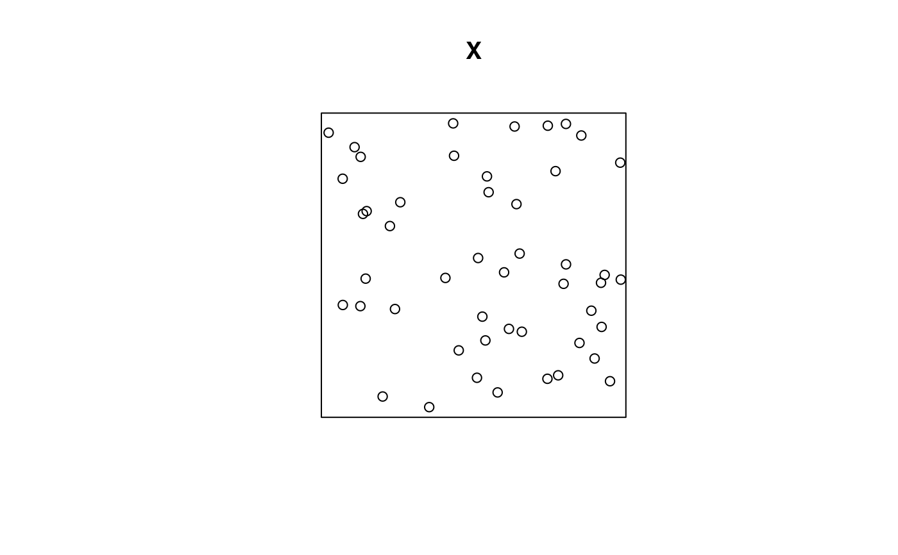

Calculate a window containing all points of a point pattern. The window is not convex but as close as possible to the points.
Arguments
- X
A planar point pattern (spatstat.geom::ppp.object).
- alpha
A smoothing parameter to delimit concave polygons.
Value
A window, i.e. a spatstat.geom::owin.object.
Details
The typical use of this function is to define a narrow window around a point pattern that has been created with a default, rectangle window.
The window is built by the alphahull::ashape() function and then transformed
into a spatstat.geom::owin.object.
The alpha parameter determines the smallest size of zones excluded from the window.
If it is not specified, a first attempt is 1/256 of the diameter of the existing window of X.
If the shape cannot be calculated, alpha is doubled and a new attempt is made.
Examples
# Simulate a point pattern
if (require(spatstat.random)) {
X <- rpoispp(50)
plot(X)
# Calculate its border
X$window <- alphahull(X)
plot(X)
}
#> Loading required package: spatstat.random
#> Loading required package: spatstat.data
#> Loading required package: spatstat.univar
#> spatstat.univar 3.1-1
#> Loading required package: spatstat.geom
#> spatstat.geom 3.3-4
#> spatstat.random 3.3-2
